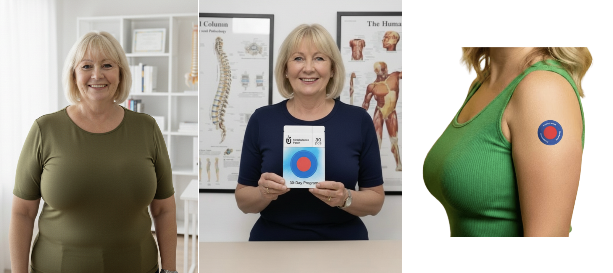
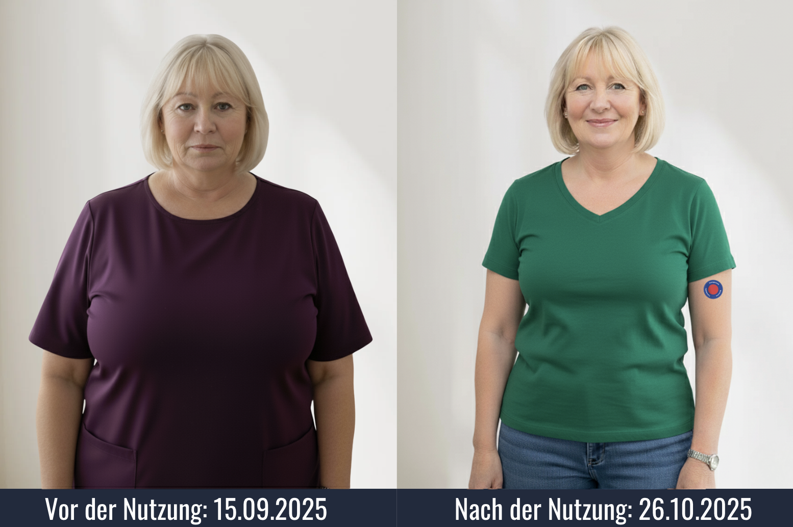
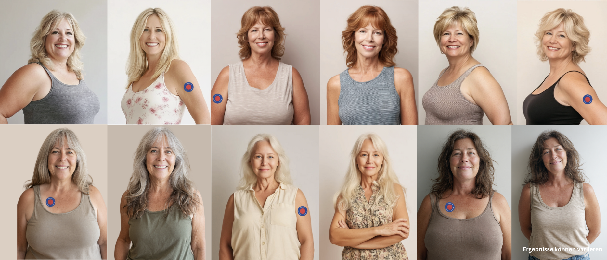
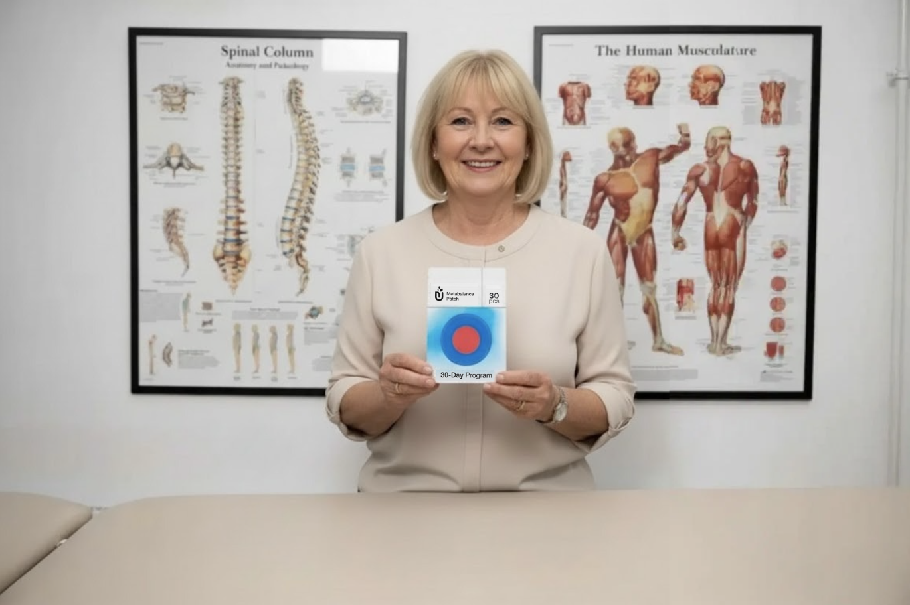

Kann abnehmen SO einfach sein? Anti-Hunger Pflaster soll Heißhunger über die Haut zügeln. Eine echte Alternative zu Crashdiäten und verschreibungspflichtigen Mitteln?
Die neue “Transdermale” Abnehm-Methode sorgt für sorgenfreies Abnehmen durch Hunger-Zügelung über die Haut. Wie die Erfinder es geschafft haben, diesen Effekt zu erzielen, hat diese Ärztin aus Berlin erforscht. Nutzer berichten von unglaublichen Ergebnissen nach wenigen Tagen.


Übergewicht zählt zu den häufigsten Volkskrankheiten mit gravierenden Folgen. In Deutschland sind rund 30 % der Bevölkerung von Adipositas betroffen (BMI über 30) – Häufige Ursachen: ein natürlicher Rückgang der Abnehm-Hormone und des Fettstoffwechsels.
Lästiges Bauchfett, Heißhunger-Attacken und nichts scheint zu helfen. Doch dann die Erfindung des Jahres: Die Abnehm-Spritze. Der Wirkmechanismus dieser ist mittlerweile vielen Leuten bekannt: Das Anti-Hunger-Hormon GLP-1 wird verstärkt produziert. Das sorgt bei Anwenderinnen und Anwendern schnell zu massivem Gewichtsverlust durch Appetitverlust. Doch die Nebenwirkungen sind unerforscht und häufen sich. Aktuell gibt es die größte Sammelklage der Geschichte, aufgrund der vielen Nebenwirkungen dieser Spritze.
Viele Verbraucher suchen nach Alternativen um den Hunger zu zügeln, den Stoffwechsel zu beschleunigen und schnell abzunehmen.
Ich bin Dr. Klara Neumann, Ernährungswissenschaftlerin. Seit 15 Jahren erforsche ich Abnehmmethoden. Bei dieser Methode, habe ich mich selbst dem Test gestellt.
Als in meinem Umfeld die Abnehm-Spritzen Thema wurden, bekam ich Angst: Nadelangst, zwei Freundinnen mit starken Nebenwirkungen, dazu die weltweit größte Sammelklagen gegen die Hersteller. Mir war klar: Ich werde mich von synthetischen Mitteln, Pillen und Abnehmspritzen weiterhin fern halten. Ich war schon immer ein Verfechter von natürlichen Mitteln.
Der Wendepunkt: ein 10-Sekunden-Ritual – Hunger reduzierendes Pflaster, morgens aufkleben, fertig. Abnehmen ohne Pillen, Diäten oder gar Spritzen. Die Idee: transdermale Wirkstoffe wie Berberin, das dafür bekannt ist, den Körper durch Hungerzügelung beim Abnehmen zu unterstützen. Der Stoffwechsel wird angeregt und die Fettverbrennung läuft auf Hochtouren.
Aus meiner Erfahrung weiß ich: Es geht nicht nur um Kalorien. Stress, verarbeitetes Essen und ein überlasteter Stoffwechsel bremsen die Fettverbrennung – der Körper schaltet in den Sparmodus. Ein sanfter Hormon-Anschub kann helfen.
„Wie ich in 2 Monaten 15 kg verlor – mit nur 10 Sekunden am Tag!“


Im August begann ich das tägliche 10 Sekunden Ritual: Schutzfolie abziehen, Abnehm-Pflaster aufkleben, Hunger zügeln – fertig. Die transdermale Unterstützung entfaltet ihre Wirkung nach 10 Sekunden und hält ca. 8–12 Stunden an, ganz ohne Pillen oder Spritze.
Die Pflaster kombinieren Berberin, Garcinia Cambogia und Grüntee-Extrakt. Die präzise Mischung unterstützt den natürlichen Hormon Haushalt, der meist für das lästige Bauchfett zuständig ist. Es fördert Sättigung, dämpft Heißhunger und aktiviert die Fettverbrennung – inspiriert von traditioneller Heilkunde, untermauert durch moderne Forschung.
Der selbe Wirkmechanismus wie bei der bekannten Abnehm-Spritze.
So wird Abnehmen alltagstauglich: aufkleben, loslegen, der Rest läuft im Hintergrund. Ergebnisse variieren, konsequente Anwendung ist entscheidend.
Einige Vorher-Nachher Resultate der Probanden:


Purisaki Abnehm-Pflaster setzen gezielt Prozesse in Gang, die Ihren Körper beim effektiven Abnehmen unterstützen. Der Stoffwechsel wird kontinuierlich gefördert, die Fettverbrennung verstärkt und das Verlangen nach zusätzlichen Kalorien deutlich abgeschwächt. Mit dieser wirksamen Kombination helfen die Pflaster Ihrem Körper, überschüssige Pfunde natürlich abzubauen und Ihr Wunschgewicht langfristig zu erreichen.
Nachdem ich tiefer in die Materie eingestiegen bin stieß ich auf mehrere wissenschaftliche Untersuchungen, die die Wirkung der Patches zusätzlich bestätigen: Anwender konnten ihr Körpergewicht signifikant reduzieren – und das ohne den gefürchteten Jo-Jo-Effekt.
Eine kürzlich veröffentlichte Benutzerbefragung mit über 1.967 Teilnehmern zeigte zudem, dass regelmäßige Berberin-Anwender durchschnittlich 84% mehr Gewichtsverlust erlebten als vor der Anwendung – und das ganz ohne strenge Diätvorgaben oder Verzicht auf die Weihnachtsleckereien.



Was macht die Abnehmpflaster so besonders? 4 entscheidende Wirkmechanismen sorgen für ihre außergewöhnliche Wirkung:
1. Natürliche Gewichtsregulation:
Die speziell ausgewählten Pflanzenstoffe in den Pflastern fördern gezielt den natürliche Anti-Hunger Mechanismus im Körper. Sie arbeiten harmonisch zusammen, um die Fettverbrennung zu verstärken und den Stoffwechsel auf natürliche Weise zu aktivieren.
2. Einzigartige Pflanzenextrakt-Formel:
Die raffinierte Kombination aus wissenschaftlich belegten Extrakten wie Berberin und Garcinia Cambogia verstärkt die Gewichtsabnahme spürbar. Diese Inhaltsstoffe unterstützen den Fettstoffwechsel und reduzieren die Einlagerung neuer Fettzellen, wodurch das Abnehmen mühelos wird.
3. Kontinuierliche transdermale Fettverbrennung:
Die innovative Pflaster-Technologie sorgt für eine gleichmäßige 8-12 Stunden Freisetzung der gewichtsreduzierenden Wirkstoffe über die Haut. Dadurch werden die Inhaltsstoffe kontinuierlich an den Körper abgegeben – ohne Verdauung und ohne die Höhen und Tiefen von Diätpillen.
4. Unterstützung bei Stoffwechsel und Energie:
Die Pflaster tragen aktiv zu einem beschleunigten Stoffwechsel bei und unterstützen konstante Energie für mehr Bewegung im Alltag. Diese Balance schafft optimale Voraussetzungen für natürliche Gewichtsabnahme und ein schlankeres Körpergefühl den ganzen Tag über.
Die Kraft von 4 wissenschaftlich belegten Pflanzenextrakten in einer einzigartigen Transdermalen Formel – das sind die Top-Inhaltsstoffe:
Ist die Anwendung der Abnehmpflaster sicher?
Die Pflaster gelten als sehr gut verträglich. Nebenwirkungen sind nicht bekannt – im Gegenteil: Die natürliche Pflanzenextrakt-Mischung unterstützt die Gewichtsregulation, fördert die Fettverbrennung und kann so das allgemeine Wohlbefinden deutlich verbessern. Viele Anwender berichten zusätzlich von mehr Energie und einem schlankeren Körpergefühl – zusätzlich zur Gewichtsabnahme.
1 Pflaster pro Tag ist ausreichend!
Für optimale Ergebnisse sollten Sie täglich ein Pflaster auf saubere, trockene Haut aufkleben und 8-12 Stunden tragen.
Nur im offiziellen Online-Shop erhältlich:
Um sicherzugehen, dass Sie das Originalprodukt erhalten, sollten die Pflaster ausschließlich über den offiziellen Online-Shop des Herstellers bestellt werden.
“Die Herstellung der Pflaster ist sehr aufwendig, und aktuell übersteigt die Nachfrage unsere Produktionskapazitäten. Für uns steht jedoch die Qualität an erster Stelle – Kompromisse bei der transdermalen Technologie kommen nicht infrage”, erklärt das Entwicklungsteam von Purisaki Patches.
Hier Verfügbarkeit PrüfenGut zu wissen:
Die Abnehm-Pflaster waren seit der Einführung im Jahr 2025 bereits 3 Mal ausverkauft.
